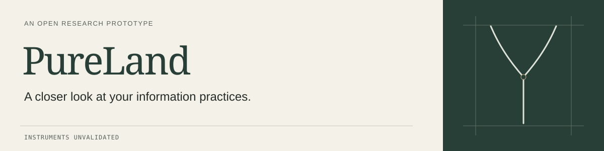

Visual system 02 / 14 September 2026
Field & Form
Warm paper and mineral color. A field ledger with enough scale to orient a first-time reader. The irregularity lives in the material and the drawn line; the interface stays precise.
Muted color.
Readable contrast.
Paper
#F4F1E9
The main reading surface.
Mineral
#283F38
Headings, actions, evidence ground.
Lichen
#DDE3D8
Linework on the mineral ground.
Clay
#865944
Small annotations and focus.
Ink
#252B27
Primary text on paper.
Stone
#596259
Readable secondary text.
Brass
#BCA77E
Decorative rules on mineral.
Ink ground
#1E2924
The optional dark reading surface.
Color names describe visual roles. Green never indicates a validated result; clay never turns a missing observation into a warning score.
One expressive voice.
One reading voice.
Cormorant Garamond
Display · 600
A closer look at
your information practices.
System sans
Body · 400 / 500
Choose an information practice of your own. Work through six steps, in order, and keep a record of what you can and cannot establish.
IBM Plex Mono
Labels · 400
Research status / instruments unvalidated
Monospace marks the record. Use it for short labels, never for paragraphs or the main navigation.
Display: 37–93 px, depending on viewport. Body: 16 px with 1.65 line height; hero introduction: 18 px. Navigation: 14 px, with 44 px targets. Fonts already owned by the repository remain self-hosted.
Movement with an end.
800 ms / one drawn line
The original fork appears once on page load. Content is readable immediately. The line completes, then rests.
160 ms / a response
A hover confirms an action. The disclosure sign changes when you open a step. No entrance sequence hides text, and the evidence stays still.
Reduced-motion preference disables the stroke animation and transitions. There is no scroll-linked animation, held scene, or extra scroll distance.
Try the method disclosuresQuiet does not mean faint.
| Text / background | Ratio | Use |
|---|---|---|
| Ink / Paper | 12.80:1 | Body text |
| Stone / Paper | 5.61:1 | Secondary text |
| Mineral / Paper | 10.01:1 | Headings |
| Clay / Paper | 5.28:1 | Small annotations |
| Paper / Mineral | 10.01:1 | Primary actions and evidence |
| Plate caption / Mineral | 7.37:1 | Illustration labels |
| Dark secondary / Ink ground | 8.74:1 | Secondary text in dark mode |
Calculated from the declared sRGB values. Targets: 4.5:1 for normal text, 3:1 for functional boundaries. Decorative hairlines carry no information alone. These checks do not establish full accessibility conformance. WCAG 2.2.
The same project,
in GitHub's own language.
Use a shared banner and the same plain-language introduction. Let GitHub render the documents in its native type and colors. Keep the five research functions visible and use direct links to their canonical files.

PureLand
A research-program prototype for examining your control over an information practice and the exposure it can create.
The public front page is risaac09.github.io/pureland-fork-kit. This repository is the record behind it. Read the method · Inspect the evidence
This is version 0.1. Its instruments are unvalidated. PureLand has one maintainer-side, AI-assisted partial dry run and no independent field trial. The current evidence does not show that the method works.
Start with your own practice
Use the self-guided packet, or examine your own language-model use with the model-use packet. To work with Isaac, propose a Field Pilot. The offering is the one description of the pilot and its terms.
The research record
| Document | Its job |
|---|---|
| Thesis | The organizing argument and its limits. |
| Method | The repeatable inquiry from Scope to Report. |
| Toolbox | Forkable instruments, templates, controls, and public-safe records. |
| Testing | The testable claim and what would count against it. |
| Current evidence | Accepted records, counterexplanations, missing evidence, and the current conclusion. |
Rendered concept · GitHub controls its own interface
Make the decisions explicit.
- Content belongs to the canonical documents. The homepage introduces each source and links to it. Check every changed claim against its owner.
- CSS tokens own the visual roles. The specimen page demonstrates them. Additional token formats should be generated and checked for parity.
- Keep behavior native. Anchors navigate; details reveal method steps. JavaScript controls the optional theme preference.
- Review the rendered result. Test 390 px, 768 px, and desktop layouts, then keyboard interaction, both themes, and the no-script fallback.
- Reconcile before promotion. PR #48 changes the same homepage and tokens. Choose its final content base before moving this second system onto the public entry point.
Design and integration specification · Audit and verification record